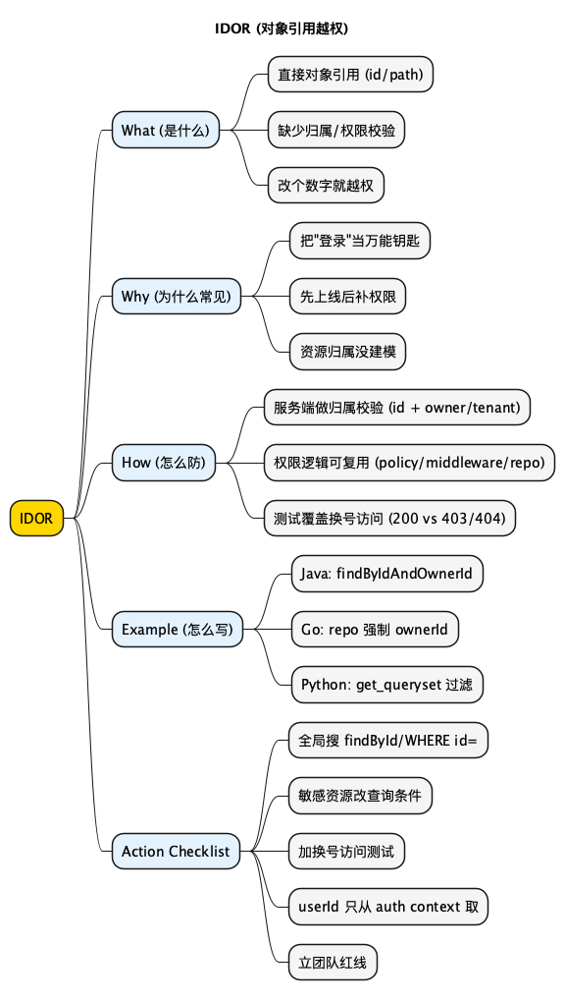

网络安全指北之 IDOR: Insecure Direct Object Reference (对象引用越权)
Posted on Mon 02 March 2026 in Tech • 2 min read
| Abstract | IDOR: Insecure Direct Object Reference (对象引用越权) |
|---|---|
| Authors | Walter Fan |
| Category | tech note |
| Status | v1.0 |
| Updated | 2026-03-02 |
| License | CC-BY-NC-ND 4.0 |
IDOR: Insecure Direct Object Reference (对象引用越权)
一句话版：你以为你在"查订单"，攻击者在"换号查别人订单"。
很多安全漏洞看起来像魔法，IDOR 不是。它更像你家门锁没锁：
- 你把门牌号写得清清楚楚 (orderId, userId, fileId)
- 你也确实做了登录 (Authentication)
- 但你没做"这扇门到底归谁"的检查 (Authorization)
于是攻击者不需要爆破、不需要注入，只要把 URL 里的 id=123 改成 id=124，你就把别人的数据端上了桌。
我早期在前司做会议系统时, 就遇到过这个漏洞, 每个会议会有一个会议号, 在参会时输入这个会议号就可以加会, 这一块是做了严格的校验和权限控制的, 可是在会议详情页查看会议信息时忽略了这个, 于是攻击者可以修改会议号, 直接查看别人的会议信息, 还好, 这个是在测试环境发现的, 如果是在生产环境, 后果就严重了.
🟢 问题：Authentication 和 Authorization 有啥区别？
- Authentication：你是谁 (你有没有登录)
- Authorization：你能干啥 (你能不能看这条数据)
IDOR 的问题通常出在第二句。
What：IDOR 到底是什么
IDOR (Insecure Direct Object Reference) 直译有点拗口，说人话就是：
当系统用"可猜的对象标识"直接定位资源时，服务端没有校验资源归属或权限，导致越权访问。
典型信号就两个：
- URL 或参数里出现
id=...、/users/{id}、/files/{fileId} - 后端查询是
SELECT * FROM ... WHERE id = ?然后直接返回，没有AND owner_id = ?
Why：为什么 IDOR 这么常见 (而且总能漏到线上)
1) "我都登录了，还要查权限吗？"
很多人潜意识里把"登录"当成万能通行证。可现实世界不是这样：
你刷卡进大楼，不代表你能进财务室。
2) 开发时偷懒，习惯性把对象当成"公共资源"
- "先把接口通了，权限晚点补"
- "反正前端不会传别人的 id"
- "这只是测试环境"
你看，都是熟悉的借口。然后就熟悉地翻车。
3) 模型没建清楚，权限边界靠"约定"
如果你没把"资源归属"建模成一等公民 (owner/tenant/org)，那权限检查就只能靠人记：
今天 A 记得加 owner_id，明天 B 忘了加，后天上线。
🔵 觉醒者反思：你们现在是不是靠 code review 人肉抓 IDOR？
如果是，那你们离"偶发事故"只差一次赶工。
How：防 IDOR，盯住三件事
1) 资源归属校验必须发生在服务端
一句话：任何来自客户端的 id 都不可信。
正确姿势通常是这句：
- "给我订单 123" → "先确认 123 的 owner 是不是当前用户"
2) 权限检查要"可复用"，别散落在每个 handler 里
你可以用：
- 中间件 / 拦截器 (把 user/tenant 放进上下文)
- Policy (Casbin / OPA / 自己的 policy 层)
- Repository 层约束 (把
ownerId作为查询必填参数)
目的无他：别靠人的记性。
3) 测试要能抓得住 IDOR
至少准备两类测试：
- "同一用户"访问自己资源 -> 200
- "换一个用户"访问别人的资源 -> 403 或 404
这里的 404/403 选哪个，看你的产品策略。安全上，两者都行，但要一致。
Example：三段你可以直接抄的示例 (Java/Go/Python)
Java (Spring Boot)：用方法级鉴权 + 资源归属校验
核心是两步：
- 从 token/session 拿到
currentUserId - 查数据库时带上
ownerId
@GetMapping("/api/orders/{orderId}")
public OrderResponse getOrder(@PathVariable long orderId,
@AuthenticationPrincipal AppUserPrincipal principal) {
long currentUserId = principal.userId();
return orderService.getOrderForUser(orderId, currentUserId);
}
public OrderResponse getOrderForUser(long orderId, long userId) {
return orderRepository.findByIdAndOwnerId(orderId, userId)
.map(OrderResponse::from)
.orElseThrow(() -> new ResponseStatusException(HttpStatus.NOT_FOUND));
}
🟢 问题：为什么这里用 404？
因为你不想告诉对方"订单 123 存在, 只是你没权限"。这算一种"少说两句"的安全习惯。
Go (Gin)：把 ownerId 变成查询必填参数
func (s *Store) GetOrderForUser(ctx context.Context, orderID, userID int64) (*Order, error) {
// SELECT ... WHERE id=? AND owner_id=?
// 只要你把 userID 变成必填, handler 就很难漏掉它
return s.repo.FindOrderByIDAndOwnerID(ctx, orderID, userID)
}
配合一个统一的 auth middleware，从 JWT 里解析出 userId 存进 context，handler 只负责取：
userID := MustUserID(c) // 从 context 取, 不从 query/body 取
orderID := MustOrderIDParam(c)
order, err := store.GetOrderForUser(c.Request.Context(), orderID, userID)
Python (Django/DRF)：get_queryset 就是你的闸口
from rest_framework.viewsets import ReadOnlyModelViewSet
from .models import Order
from .serializers import OrderSerializer
class OrderViewSet(ReadOnlyModelViewSet):
serializer_class = OrderSerializer
def get_queryset(self):
# 只返回当前用户自己的订单, 其余的压根查不到
return Order.objects.filter(owner_id=self.request.user.id)
这个写法有个好处：你后面再加 list/retrieve，权限规则天然一致。
Summary：你记住这句话就够了
IDOR 的核心不是"不要用 id"，而是：
任何对象引用都要绑定一个权限上下文 (owner/tenant)，并且在服务端强制校验。
你可以不做复杂的 RBAC/ABAC，但你不能不做"归属检查"。
目的无他：别让"登录"变成万能钥匙。
明天就能做的 5 件事 (Checklist)
- [ ] 全局搜索
findById(/WHERE id =：看看有没有漏掉 owner/tenant 条件 - [ ] 挑 3 个最敏感资源：订单、发票、文件、地址，把查询改成
id + ownerId组合 - [ ] 补一条"换号访问"测试：同一条资源，A 用户 200，B 用户 403/404
- [ ] 把 userId 的来源收口：只从 auth context 取，禁止从 request 取
- [ ] 写一条团队红线："任何资源查询必须带 owner/tenant"，写进 review checklist
扩展阅读
- OWASP Top 10 2021 - A01 Broken Access Control (IDOR 的大本营)
- OWASP Cheat Sheet Series - Authorization Cheat Sheet (怎么做授权不踩坑)
思维导图
@startmindmap
<style>
mindmapDiagram {
node { BackgroundColor #FAFAFA }
:depth(0) { BackgroundColor #FFD700 }
:depth(1) { BackgroundColor #E3F2FD }
:depth(2) { BackgroundColor #F5F5F5 }
}
</style>
title IDOR (对象引用越权)
* IDOR
** What (是什么)
*** 直接对象引用 (id/path)
*** 缺少归属/权限校验
*** 改个数字就越权
** Why (为什么常见)
*** 把"登录"当万能钥匙
*** 先上线后补权限
*** 资源归属没建模
** How (怎么防)
*** 服务端做归属校验 (id + owner/tenant)
*** 权限逻辑可复用 (policy/middleware/repo)
*** 测试覆盖换号访问 (200 vs 403/404)
** Example (怎么写)
*** Java: findByIdAndOwnerId
*** Go: repo 强制 ownerId
*** Python: get_queryset 过滤
** Action Checklist
*** 全局搜 findById/WHERE id=
*** 敏感资源改查询条件
*** 加换号访问测试
*** userId 只从 auth context 取
*** 立团队红线
@endmindmap

本作品采用知识共享署名-非商业性使用-禁止演绎 4.0 国际许可协议进行许可。